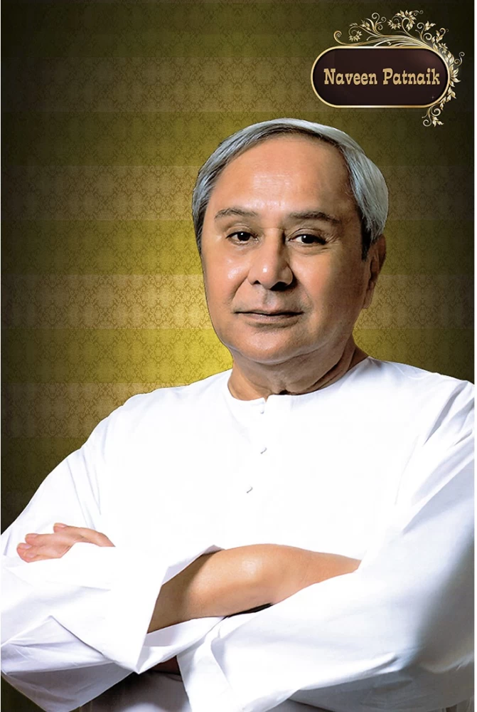

"Naveen: Best Leader of the Odisha, Leader of Hearts - A Tribute from Odisha People"
Naveen Patnaik
Home
About
Yojana
Naveen Patnaik
Naveen Patnaik, the esteemed Chief Minister of Odisha, has exemplified remarkable
leadership and vision, guiding the state through numerous transformations since he
assumed office in 2000. Over his tenure, Patnaik has become synonymous with stability, progressive governance, and unwavering commitment to the welfare of the people of Odisha.

Naveen Patnaik
Patnaik's dedication to improving education and healthcare in Odisha has led to
significant advancements in these sectors. The establishment of new schools,
colleges, and healthcare facilities has enhanced the quality of life for many residents. His administration's focus on skill development has equipped the youth with the necessary tools to thrive in a competitive job market.
Naveen Patnaik
Naveen Patnaik's tenure as Chief Minister has been a period of transformation
and growth for Odisha. His visionary leadership, dedication to social welfare,
and commitment to inclusive development have left an indelible mark on the state. As Odisha continues to progress under his guidance, Naveen Patnaik's legacy of service and leadership will inspire future generations to strive for excellence and work towards the betterment of society.